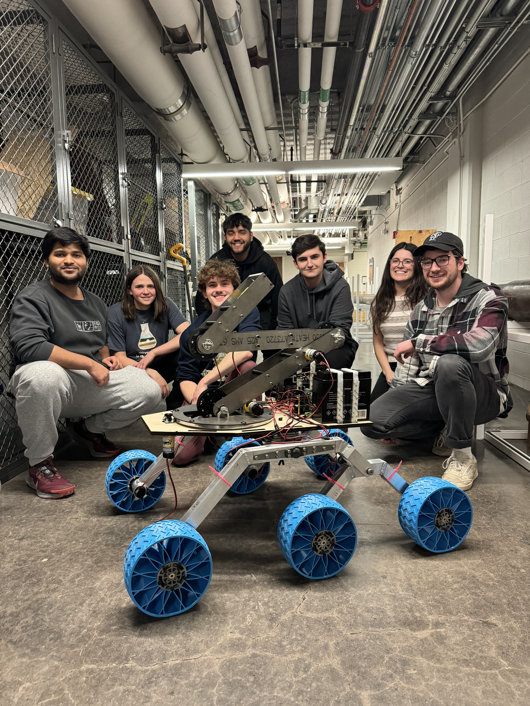
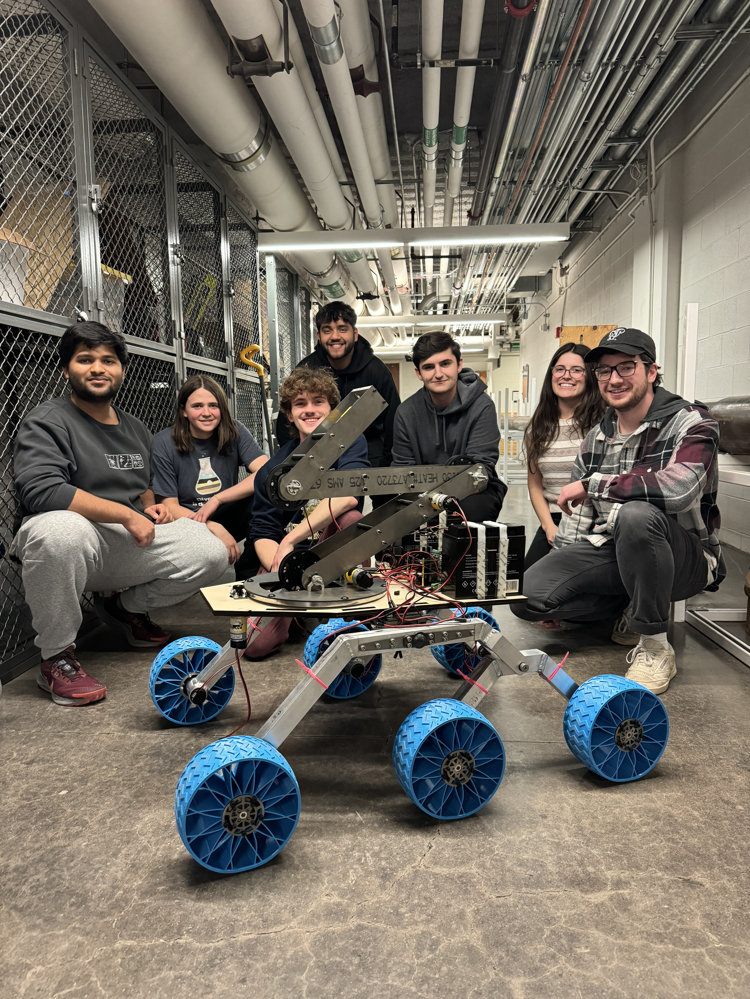

Alexander Kwasinski
University Rover Challenge
Electrical and Software Team Lead
The University Rover Challenge is a competition held every year by a few NASA employees where many universities are tasked to build a fully functional Mars rover. I am a member of Pitt's Society of Astronautics and Robotics (SOAR) where we are tackling this challenge.
I am currently the software leader for our team, and I direct and organize a team of 5. Throughout my time working on this competition, I have developed the motor control, wired the components, utilized information from different sensors, and created GUIs. Through this project, I have learned how to utilize a ROS environment with a Linux system. I have also expanded my knowledge of Arduino, electronics, and coding languages.
Skills Utilized: ROS, Linux, Arduino, Electronics, C++, Python
 

Micromouse
Member of the Electrical Subteam
Within Pitt's Robotics Automation Society (RAS), I work on the micromouse team. Micromouse is a competition where teams build a mouse-sized robot that can autonomously navigate a maze in the shortest possible time.
My role in this team is to work with the other electrical subteam members to build a working prototype of the robot using Arduino boards and code. Specifically, I directly contributed to picking the components that we are using. I also put all of those components together on a breadboard for testing. In the process, I also had to communicate with the other subteams to ensure compatibility.
Skills Utilized: Arduino, Breadboarding, Communication

Drone Challenge (UAV) Competition
The Drone Challenge is a competition within the organization called TSA or Technology Student Association. The competition task was to build a fully functional drone with a programmable claw to pick up a payload. We then had to traverse an obstacle course with the payload. We earned points by picking up the payload, successfully traversing the obstacles, and dropping the payload in the designated location. My team placed first in a competition of around 40 teams in the state of Pennsylvania.
For this competition, I learned how to use CAD software, 3D printing, laser cutting, and how to manage a budget (we could only use $500).
Skills Utilized: CAD, 3D Printing, Laser Cutting, Budget Management